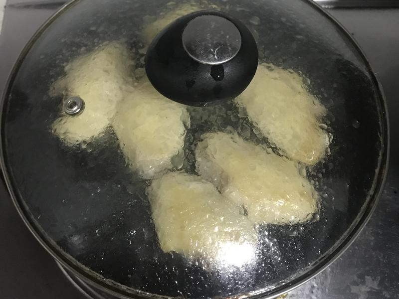

鸡中翅 8个
盐 1勺
料酒 半瓶盖
黑胡椒粉 适量
葱花 少许
孜然粉 少许
鸡翅中洗净，沥干水分，每个鸡翅用牙签戳十几下，方便入味。加入料酒、黑胡椒粉、盐拌匀，装入保鲜袋，放入冰箱冷藏半天，黑胡椒粉用来提味，没有的话不用也行。
冷藏了两个小时左右，将保鲜袋翻转一下，这样下层的鸡翅也会和汁液接触，更好入味。
冷藏腌制好后，平底锅加少量油烧热，平铺放入鸡翅中，先煎有皮的那面，中小火煎1-2分钟，感觉鸡皮发黄后盖盖焖两分钟，然后翻面，盖盖继续焖两分钟。
再翻两三次面，每面盖盖焖2-3分钟，感觉两面金黄发焦就煎好了。出锅撒上葱花和孜然粉，开吃！-2分钟，感觉鸡皮发黄后盖盖焖两分钟，然后翻面，盖盖继续焖两分钟。